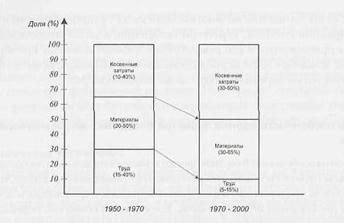
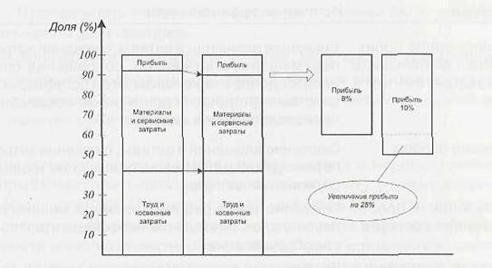

Одной из особенностей оценки проектов внедрения является необходимость анализа технологической прогрессивности прикладных программ, уже имеющихся на предприятии, и их морального износа, определяемого исходя из даты инсталляции или разработки. Такой анализ позволяет более адекватно оценить преимущества, которые получит предприятие от внедрения новой системы. Интуитивно понятно, что внедрение прогрессивного программного обеспечения (например, полнофунтциональной интегрированной ERP-системы реального времени) должно принести ощутимую пользу любой компании. В то же время польза от внедрения устаревшей, имеющей ограниченные функциональные возможности и не имеющей возможностей развития системы будет совсем не столь очевидной.
Анализ имеющихся систем по их возрастам требует знания приблизительных дат их инсталляции, а также оценки этих систем в количественном выражении или в процентах от всего используемого программного обеспечения. Такой анализ позволяет более обоснованно определить стратегию замены устаревших программных средств по различным функциональным областям, включая оценку способов замены — новыми собственными разработками или путем закупок у внешних разработчиков.
Для использования вышеописанных методов инвестиционного анализа необходимо измерить все преимущества в денежном выражении. Для этого могут быть использованы два основных финансовых отчета компании — отчет о прибылях и убытках и балансовый отчет. При оценке эффективности инвестиций следует принять во внимание следующие показатели отчета о прибылях и убытках:
Среди перечисленных полиций наиболее важными являются первые две. Что касается остальных, то при недостаточности данных они могут быть пропущены, как не столь существенные. Как показывает опыт, наибольшие трудности связаны с определением себестоимости продукции. Структура себестоимости производства за последние десятилетия довольно сильно изменилась; в частности, это выразилось в снижении доли трудовых затрат и росте удельного веса накладных расходов (рис. 14). Именно накладные расходы (составляющие в настоящее время от 30 до 60% производственной себестоимости) создают основные трудности, многие предприятия просто не умеют адекватно относить их на выпускаемую продукцию.
 |
Возникает резонный вопрос: а как снижение той или иной составляющей себестоимости влияет на главный показатель — прибыль? Снижение материальных затрат вроде бы незначительно — с 50 до 48% от выручки от продаж (рис. 15), но валовая прибыль при этом возрастает с 8 до 10% от выручки, или, иначе говоря, на целых 25%!
 |
Что касается показателей балансового отчета, то наиболее существенными из них являются уровень запасов (с разбивкой па закупаемые материалы, полуфабрикаты собственного производства, незавершенное производство, готовую продукцию) и счета расчетов с дебиторами и кредиторами.
Оценивая результаты внедрения, желательно также принять во внимание некоторые дополнительные показатели (не содержащиеся в финансовых отчетах), например следующие: